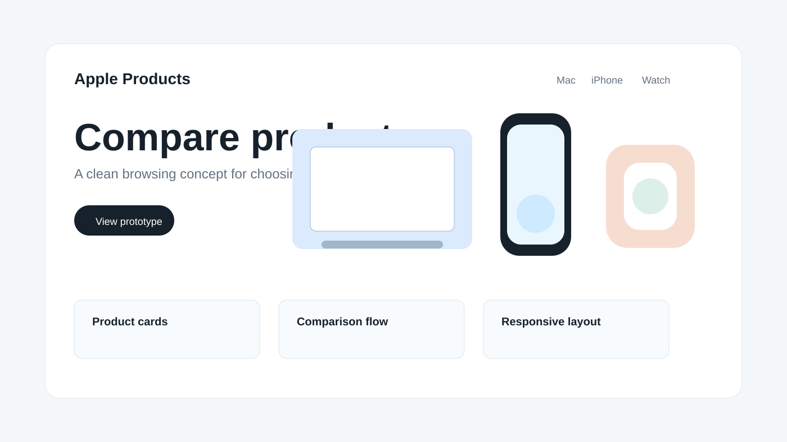

Apple Products
A clean product-browsing website concept based on a brief, focused on hierarchy, product comparison, and a polished interface that feels familiar without becoming cluttered.
Case study
This project did not have a formal written case study, so this page frames the work as a design process: understanding the brief, structuring product information, exploring interface patterns, and producing a final prototype that makes product discovery feel clean and direct.
- The goal was to make Apple product browsing feel simple, premium, and easy to scan.
- The interface needed clear navigation, strong product hierarchy, and a direct path into product details.
- The prototype focuses on visual polish, consistency, and interaction flow.
Research
The research direction looked at familiar product-page conventions: high-contrast hero areas, simple navigation, comparison-led cards, and clean spacing. The main takeaway was that a product website should reduce decision effort by making categories, benefits, and next steps immediately visible.

Sketching
The sketching phase can be presented as low-fidelity layout planning: navigation at the top, a strong product-led hero, comparison cards below, and a clean visual rhythm that lets the product images and names do most of the work.
- Mapped top navigation around product categories.
- Planned a hero area that introduces the browsing task quickly.
- Used repeated card patterns to keep comparison simple.
Iterating
Iteration focused on reducing clutter, keeping labels short, and making the interface feel balanced. The layout uses a restrained palette and repeated spacing so the website feels calm and premium rather than overloaded.
Wireframes and final prototype
The final prototype shows the product browsing flow in Figma. It can be used to discuss layout decisions, product hierarchy, interaction states, and how the interface responds to the brief.